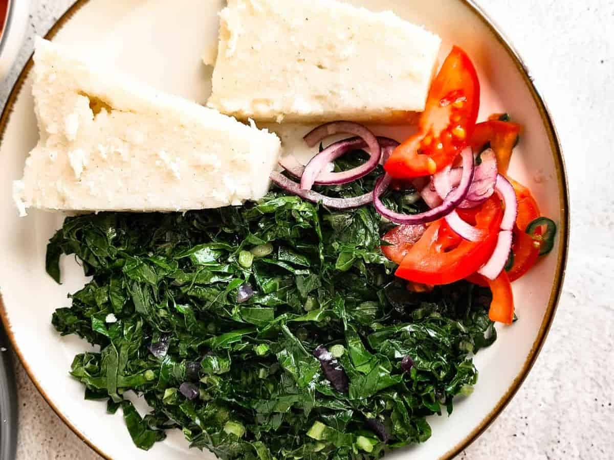

Ugali, sukumawiki Recipe

Description
Ugali is the staple food in Kenya and a favorite for many nationals. It is quite easy to prepare and only requires a few ingredients.
Ingredients
Steps
- In a sufuria, boil water. The amount depends on the number of people 1 cup per person.
- Add flour to the boiling water and knead with a mwiko, adding until its to the preferred stiffness.
- Give it time to cook before removing from the stove.